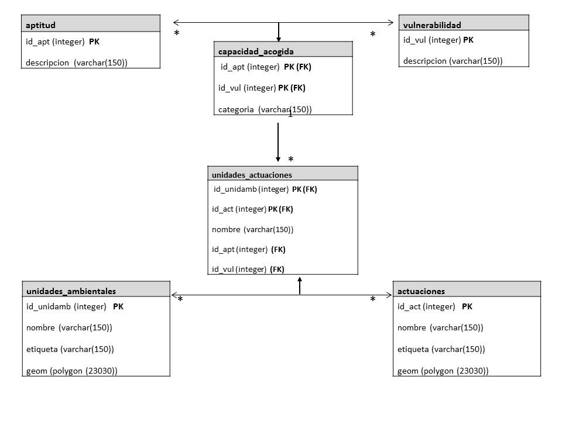

-
SoftwareArcgis Qgis
-
Bases de DatosPostgreSQL Oracle Database 11g Microsoft Access
-
Web Mapping - InternetGeoserver Openlayers HTML5 CSS JavaScript XML
-
AprendiendoPython Leaflet MongoDB Inglés (B2-First Certificate in English)
Capacidad de uso del suelo - Proyecto final de Máster SIG
ENGLISH VERSION
El objetivo de la aplicación Web desarrollada, basada en estándares OGC para el acceso y visualización de información geográfica, es dotar a los técnicos de una herramienta sencilla y accesible en Web, que ayude en los procesos de toma de decisiones y análisis de la capacidad de usos del suelo como parte de un Estudio de Evaluación Ambiental.
Esta aplicación dispone de una arquitectura de 3 capas (almacenes de datos, servicios y clientes) y ha sido desarrollada con tecnologías OpenSource (PostGIS, Geoserver, Apache httpd, OpenLayers) y consume datos propios publicados mediante estándares OGC (WMS y WFS) y capas de la IDE tanto de suelos (litológico, geológico, topográfico, ortoimágenes) como climáticos (precipitaciones y temperaturas).
Desarrollo del Visor
Se propone una arquitectura cliente-servidor en tres capas que hace uso de seis componentes de código abierto, cada uno con su papel funcional particular:
Recopilación de información geográfica base y temática para su respectivo análisis y tratamiento.
Creación del modelo relacional de la información geográfica.
Almacenamiento de datos y generación de consultas: BBDD Postgres con extensión espacial PostGIS.
Servidor de mapas y datos geográficos (GeoServer).
Interfaz de desarrollo de componentes de mapas (OpenLayers).
La visualización de los datos en un geovisor web con herramientas de visualización y manejo SIG bajo plataforma OpenLayers.
Para la determinación de la capacidad de uso (o acogida) de cada actividad a ordenar en el término municipal, se aplica un modelo que opera sobre los conceptos de vulnerabilidad, efecto de la actividad sobre cada unidad ambiental y aptitud, medida en que el medio cubre los requisitos de localización de una actividad. Este modelo tiene su fundamento en la evidencia de que la mayor capacidad de acogida la proporcionan aquellas unidades de integración donde coinciden la máxima aptitud con el mínimo grado de vulnerabilidad.
Para su desarrollo práctico se formalizan matrices de vulnerabilidad y de aptitud por cada unidad ambiental homogénea.
Se construye una matriz de vulnerabilidad que indica en las casillas de cruce la vulnerabilidad de las diferentes unidades ambientales frente los diferentes usos actuales o potenciales del medio físico:
| VALOR | RANGO |
|---|---|
| 0 | Muy desfavorable |
| 1 | Desfavorable |
| 2 | Indiferente |
| 3 | Positivo |
| 4 | Muy positivo |
La matriz de aptitud se desarrolla a partir de unos factores que dependen de las características de la actuación de que se trate (presencia de buenas comunicaciones, existencia de un recurso, proximidad a zonas pobladas, geomorfología, etc). Cada una de las unidades tendrá pues uno de los siguientes valores:
| VALOR | RANGO |
|---|---|
| 0 | Muy negativa |
| 1 | Negativa |
| 2 | Indiferente |
| 3 | Positiva |
| 4 | Muy positiva |
| 5 | Sobresaliente |
La agrupación final de los impactos(vulnerabilidad) y aptitudes agregadas en clases de valor expresan los criterios para la determinación de la capacidad de acogida de cada unidad de integración, según los criterios expresados en la siguiente tabla:
| Clases de APTITUD agregada | ||||||
|---|---|---|---|---|---|---|
Clases de IMPACTO agregado |
Muy negativa 1 |
Negativa 2 |
Indiferente 3 |
Positiva 4 |
Muy positiva 5 |
|
| Muy desfavorable 1 | MUY BAJA |
MUY BAJA |
MUY BAJA | |||
| Desfavorable 2 | BAJA | |||||
| Indiferente 3 | BAJA |
MEDIA | ALTA | |||
| Positivo 4 | ALTA | MUY BAJA |
||||
| Muy positivo 5 | ||||||
Tabla 1.Criterios para la determinación de la capacidad de acogida a partir de rangos de impacto y aptitud. (GÓMEZ OREA, 1994)
Desarrollo del Visor

Base de datos
PostgreSQL es un sistema de gestión de bases de datos objeto-relacional, distribuido bajo licencia BSD y con su código fuente disponible libremente. PostGIS es un módulo que añade soporte de objetos geográficos a la base de datos, convirtiéndola en una base de datos espacial para su utilización en Sistema de Información Geográfica. Se publica bajo la Licencia Pública General de GNU.
GeoServer
GeoServer es un Servidor Web que permite servir mapas y datos de diferentes formatos para aplicaciones Web, ya sean clientes Web ligeros, o programas GIS desktop. Esto significa que puedes almacenar datos espaciales en casi cualquier formato que se desee, y los usuarios no tienen que saber nada sobre datos GIS. En el nivel más simple, lo que único que necesitan es un Web Browser para ver exactamente tus mapas como tu quieras.
OpenLayers
OpenLayers es una biblioteca de JavaScript de código abierto bajo una derivación de la licencia BSD para mostrar mapas interactivos en los navegadores web. OpenLayers ofrece un API para acceder a diferentes fuentes de información cartográfica en la red: Web Map Services, Mapas comerciales (tipo Google Maps, Bing, Yahoo), Web Features Services, distintos formatos vectoriales, mapas de OpenStreetMap, etc.

Qgis
QGIS es un Sistema de Información Geográfica (SIG) de Código Abierto licenciado bajo GNU - General Public License . QGIS es un proyecto oficial de Open Source Geospatial Foundation (OSGeo). Corre sobre Linux, Unix, Mac OSX, Windows y Android y soporta numerosos formatos y funcionalidades de datos vector, datos ráster y bases de datos.
Diseño y programación web
El lenguaje HTML (HyperText Markup Language) hace referencia al lenguaje de marcado para la elaboración de páginas web. Define una estructura básica y un código para la definición de contenido de una página web, como texto, imágenes, videos, juegos, entre otros.
El lenguaje de estilos CSS (Cascading Style Sheets) se utiliza para controlar la presentación, el formato, y el diseño de un documento estructurado escrito en HTML. La idea que se encuentra detrás del desarrollo de CSS es separar la estructura de un documento de su presentación.
JavaScript es un lenguaje de programación, interpretado principalmente por un navegador web, permite agregar mejoras en interfaces de usuario y dinamismo (es decir movilidad/actividad) en nuestros documentos dentro del navegador web.

Selección de las actuaciones propuestas en función de la capacidad de acogida de una determinada Unidad Ambiental

Reyes Antequera
Medio Ambiente y GIS
Resumen
Resumen
Reyes es Licenciada en Ciencias Ambientales especializada en Sistemas de Información Geográfica por la Universidad Pablo de Olavide y obtuvo el Máster en Sistema de Información Geográfica: Planificación, Ordenación Territorial y Medio Ambiente en el Centro de Formación Permanente de la Universidad de Sevilla. Tras completar su proyecto final de Máter relacionado con la creación de un Geovisor Web, utilizando la tecnología de leaflet, openlayer, geoserver, continuó su formación realizando prácticas extracurriculares en la Agencia de Medio Ambiente y aguas de Andalucía durante 6 meses donde se encuentra actualmente.
Experiencia profesional
Experiencia profesional
Habilidades
Habilidades
Educación
Educación
Formación Complementaria
Formación Complementaria
Voluntariado
Voluntariado
Intereses
Intereses
- Naturaleza Actividades al aire libre Senderismo Deportes Educación Escultismo Fotografía Internet